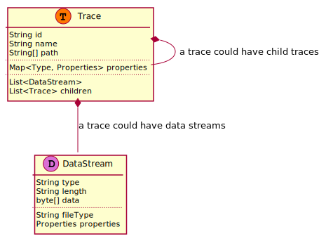
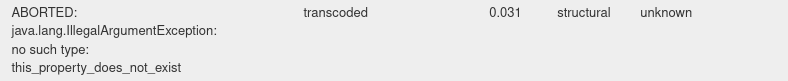

Traces & Trace model
Traces
Traces are structured data objects produced by tools/plugins during an extraction. A trace represents a piece of information found in an evidence file.
The following figure shows the main elements of a trace. Each element is described in more detail in the following paragraphs.
{kind=link}
Types and Properties
A trace has properties that describe the information of it by means of a property value. Trace properties are grouped by a trace type. A trace can have multiple types.
All types and properties that can be set are defined in the Hansken trace model.
An example of a type is document, which could have the properties application and createdOn. The trace will have a
type document, and can the following properties with values:
document.application: Libre Office
document.createdOn: 2021-09-18 20:00:00
Intrinsic properties
A trace has several intrinsic properties. These are properties that are not related to a trace type. The intrinsic properties available to extraction plugins are:
id: a unique identifier of the trace, generated when a trace is createdname: a name given to a trace when it is createdpath: a logical path of the trace, of which the elements are the names of traces from the root trace until this trace
Data streams
Typically, a trace represents a piece of data found in an evidence file. This data is part of the trace and available as
a data stream. A trace can have multiple data streams. Each data stream has a type. Data streams can also have
properties that apply to the data stream itself. The data stream properties are modeled as properties of the trace, in
the following pattern:
data.<datastreamtype>.propertyname (where <datastreamtype> is substituted by the actual type of the data stream).
The set of data stream types and data stream properties is fixed. All allowed types and properties are defined in the
Hansken trace model (see data).
An important data stream property is the fileType property. This property contains a textual description of the
detected file type for the data stream. An example of a fileType is ‘Adobe Pdf’. The fileType is a good candidate
to use in a extraction plugin ‘matcher’. This fileType is detected by Hansken using file type heuristics, which are
primarily based on the data stream bytes itself, and secondarily on other metadata such as a file extension.
(N.B. The fileType is detected in Hansken by the extraction tool Firefli.) For more information on how datastream
properties can be used for matching, see here.
Note that not all traces have data streams. In these cases it is a trace of meta-data derived from another trace.
Usually, each trace with data has a data stream of type raw. This data stream contains the bytes of the traces as they
were found when the trace was created. In some occasions, the raw data can be represented in a different form before it
can be processed further, for example if the data can be decoded or decrypted. Hansken tools and plugins can decode
the raw data stream to a standard UTF-8 data stream, or can decrypt the data if a decryption key is present. Hansken
tools and extraction plugins can store the new data at the new trace in a new data stream. This new data stream has a
different type than the raw type.
Examples in code can be found here:
Child traces
A trace can have child traces. For example, a trace of type archive can have children, where each child is a trace
that represents an entry in the archive.
With an extraction plugin it is possible to create child traces for a trace that is being processed. New properties,
data streams, and other child traces can be set on the new child traces. When a child trace is created, the plugin
should provide a name for the child trace. The id of the child trace is generated, in the following
form: parenttraceid-childnumber. For example, if the parent has an id 0-0-0-0-0:0-9, the first child gets the
id 0-0-0-0-0:0-9-1, the second child gets the id 0-0-0-0-0:0-9-2, and so on.
Note that a trace does not have (direct) access to its parent trace.
Trace property types
The SDK supports the following property types for traces:
Java |
Python |
|
|---|---|---|
binary |
|
|
boolean |
|
|
integer |
|
|
real |
|
|
string |
|
|
date & time |
|
|
list |
|
|
mapping |
|
|
location |
|
|
vector |
|
|
tracelet |
see Tracelets below |
see Tracelets below |
Both location and vector types are available from the SDK, Java package org.hansken.plugin.extraction.api or Python module hansken.util.
Vector
A vector is a data type that can be used to store points in n-dimensional space as an array of floating point values. Once indexed, the vectors can then be used in a gui or other client to search for traces that have a nearby vectors. For example, it is possible to use a neural network that provides embeddings of human faces as vectors. Once indexed, the vectors can then be used to find pictures with similar faces. To do this, the search rest api can be used to sort by the euclidean- or manhattan distance, or cosine similarity to a given vector.
Tracelets
A Tracelet is a bundle of property values that belong to a single type. It is a property on a trace that can have multiple properties itself, making it a list of key/value pairs. The API doesn’t specify the cardinality, but the implementation is limited to cardinality ‘Few’. In Hansken these are called FVT’s (Few Valued Types).
Note
MVT’s (Many Valued Types) are currently not supported in the SDK and will be added in a future release.
An example of a tracelet is the prediction property, which describes a category or class a trace belongs to. It is
possible for a trace to have multiple predictions. Therefore prediction is a tracelet. Other examples of
tracelets are identity and collection.
Examples in code can be found here:
Hansken trace model
All traces in Hansken are based on a specific version of the trace model, and must comply to that version of the trace model. This is a nested data structure composed of origins, categories, types and properties.
All non-inrinsic trace properties are optional and are grouped by type. These types are defined under the trace model section ‘categories’. Every category has a list of allowed types. When a trace is identified as being a document, it will get this set of predefined document properties. Trace types can have different origins. The possible origins are defined in the trace model section ‘origins’. An example of this is the processed types that are always generated by the system during an extraction.
The details of the current trace model can be retrieved using the /tracemodel
REST call on the Gatekeeper endpoint of Hansken, or check the Hansken Documentation on the trace model.
Trace model and the extraction plugin SDK
Warning
The extraction plugin SDK has no knowledge of the trace model
The Extraction Plugins SDK has no knowledge of the trace model at this time. It is however possible to create new traces with plugins. If any newly created Traces don’t comply to the model, Hansken will not accept them and mark the plugin execution as failed. The Extraction Plugins SDK and the provided Test Framework don’t check this. Please make sure to use the right naming when creating new Traces, as provided by the trace model.
If an erroneous trace property is set, Hansken will show an error. The error can be found in the Hansken Expert UI interface by double-clicking on the trace. Then the trace details screen will be opened and the error will be displayed as follows:
This error describes that a property does not exist in the trace model. To get more information about the error, the
extraction log can be viewed. In the extraction log you have to search
for java.lang.IllegalArgumentException: no such type to find out which property is not supported by the trace model.
In the example extraction log below, the property this_property_does_not_exist could not be found 681 times.
Cumulative warnings, based on the message without numbers, uuids and trace objects. Only showing full message for first warning of this type.
Count | Key | Message
681 | org.hansken.ep.shade.io.grpc.StatusRuntimeException | CANCELLED: Cancelled by client with StreamObserver.onError(); org.hansken.ep.shade.io.grpc.StatusRuntimeException: ABORTED: java.lang.IllegalArgumentException: no such type: this_property_does_not_exist
7 | java.lang.IllegalStateException | call was cancelled
1 | org.hansken.ep.shade.io.grpc.StatusRuntimeException | UNAVAILABLE: HTTP/2 error code: NO_ERROR Received Rst Stream